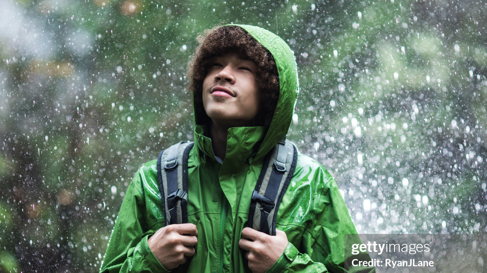
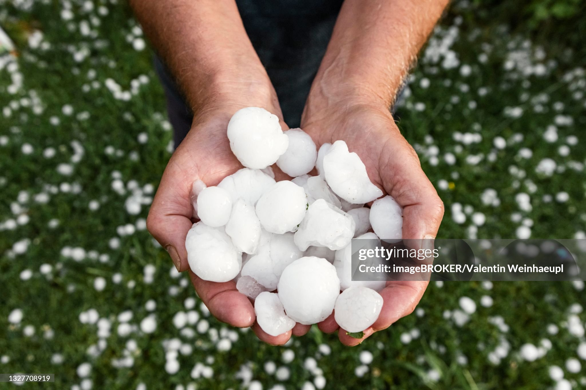
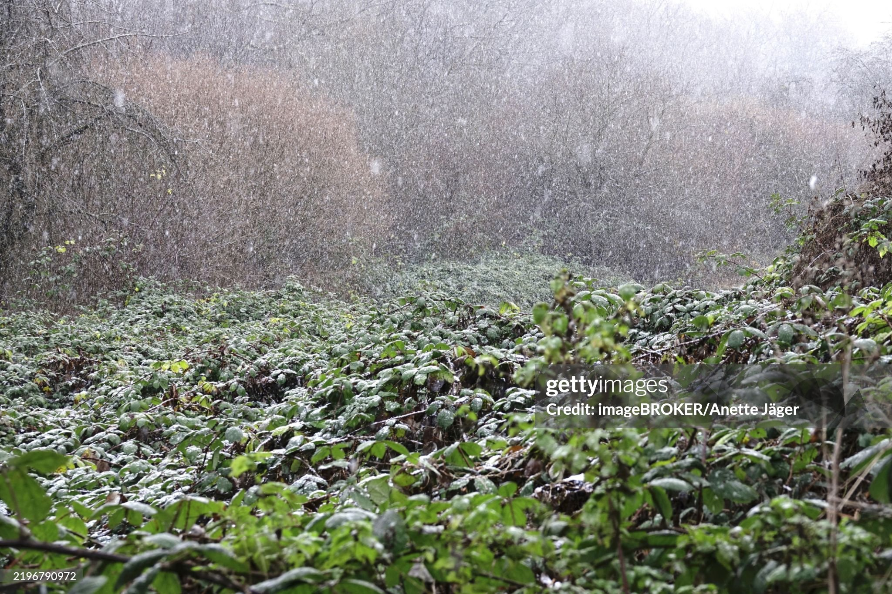

Earth’s Water Cycle
Water on Earth is incredibly old. The water in your glass today may have once rained down on an ancient volcano, been frozen for thousands of years in a glacier, or even been slurped out of a puddle by a thirsty dinosaur!
How is that possible?
Water on Earth doesn’t disappear—it’s always on the move. It travels through a continuous journey called the water cycle, powered by energy from the Sun and the force of gravity.
In this lesson, you’ll explore how Earth’s water moves and changes, and build a model of the water cycle along the way.
Going Up!
Ever been caught in the rain? Those drops soaking your shirt fell from the sky. But how did they get up there?
Water makes the trip from Earth’s surface into the atmosphere through a process called evaporation.
When sunlight warms a pond, puddle, or ocean, it transfers a small amount of energy to the water molecules closest to the surface. These molecules can then break free and escape into the air as invisible water vapor. If the air around the molecules is dry enough, those tiny bits of water can drift upward, rising higher and higher into the atmosphere.
A Little Help From Plants
Plants can also help move water from Earth’s surface into the sky. Plants can even move water from beneath the surface with the help of a process called transpiration. Transpiration is similar to evaporation, but it happens when plants release water vapor through tiny openings in their leaves, called stomata.
Water travels from the plant’s roots into the leaves, and as the Sun warms the leaves, the water evaporates from the stomata and escapes into the air. This helps to cool the plant and pull more water and important nutrients into the plant.
Water vapor from plant transpiration is an important part of the water cycle. In fact, plants release far more water vapor into the air than animals do. In a single day, a large tree can release hundreds of liters of water vapor into the atmosphere!
Chilling Out
Now that we know that water moves from Earth’s surface into the atmosphere, imagine what would happen if that water just kept rising and rising. Eventually, all of the water would be gone from Earth’s surface!
Fortunately for all of us, condensation also plays a part in the water cycle. Think of condensation as the opposite of evaporation. As warm water vapor rises, the molecules lose heat energy to the cold air high in the atmosphere. As they lose energy, they slow down and can more easily clump together, forming tiny water droplets. When these droplets combine with tiny particles of dust or salt in the air, they can form clouds.
What Goes Up, Must Come Down
As water droplets in clouds condense and combine with particles to form clouds, they gain mass. Once they gain enough mass, Earth’s gravity becomes strong enough to pull the water back to the surface. Any form of water that falls from the atmosphere is called precipitation. The four common forms of precipitation are rain, snow, hail, and sleet.
Precipitation is a crucial part of the water cycle. Once the water is on the ground, gravity pulls it downhill into streams, rivers, lakes, and oceans. Some of it also soaks into the earth, becoming groundwater.



All Together Now
You have learned about the parts of the water cycle, and the factors that drive them. Think about the ways these factors interact, and how changes might impact the water cycle. For example, if the trees around a pond were cut down, allowing more sunlight to reach the pond, what would happen to the amount of water that evaporates from that pond? What about the water underground around the pond? If there is more dust in the atmosphere, would you expect more or less precipitation? What if the dust is thick enough to block a significant amount of sunlight?
The next time you get caught in the rain, remember the incredible and complex journey that water has made!